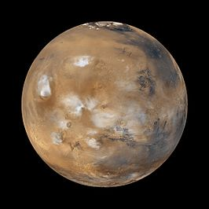

De Rode Planeet
Algemene informatie
Mars werd ontdekt in de Oudheid door Aristoteles. De planeet werd vernoemd naar de Romeinse oorlogsgod Mars. Mars is kleiner dan de Aarde en ligt heel dichtbij vergeleken met andere planeten. Een dag op Mars duurt 39 minuten langer dan op Aarde. Zo'n dag noemen we een sol. Mars heeft twee manen, Phobos en Deimos. Sinds 1960 zijn er onderzoeksvoertuigen gestuurd en onderzoekers kwamen erachter dat er water aanwezig was op Mars. Hierdoor zou kolonisatie mogelijk zijn. De temperatuur is alleen niet zo gunstig; de temperatuur op de grond is -140 graden Celsius tot 20 graden Celsius.
Op deze website is veel informatie te vinden over deze bijzondere planeet. In de subpagina Ruimte en tijd leer je meer over de omgeving en het tijdsverloop op Mars. In de subpagina Kolonisatie kom je erachter of het echt mogelijk is om mensen te stationeren op Mars. In de laatste subpagina Het klimaat kom je meer te weten over het weer op Mars en de atmosfeer om Mars die daarvoor zorgt.

klik op plaatje voor meer info